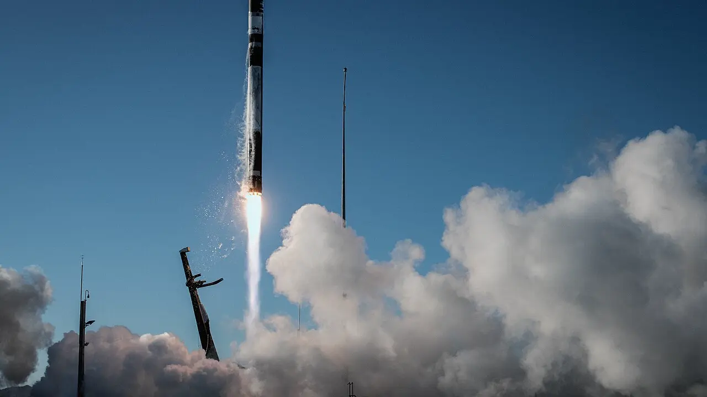

로켓 랩을 검색하는 독자가 가장 궁금해하는 질문은 대체로 비슷합니다. “이 회사가 제2의 스페이스X가 될 수 있나”, “Neutron 첫 발사가 성공하면 주가는 다시 달라지나”, “아직 적자인데 지금 숫자를 믿어도 되나”입니다. 이 질문은 모두 중요하지만 순서를 잘못 잡으면 우주 산업의 화려한 장면이 숫자보다 앞서게 됩니다.
로켓 랩은 단순한 소형 로켓 회사로 보기 어렵습니다. Electron과 HASTE로 발사 신뢰를 쌓았고, Space Systems 사업으로 위성, 부품, 센서, 태양전지, 소프트웨어, 우주선 제작을 함께 팔고 있습니다. 여기에 Neutron 중형 발사체가 붙으면 회사는 소형 전용 발사 기업에서 방산·상업 우주 인프라 공급자로 한 단계 넓어질 수 있습니다.
다만 투자 판단에서 먼저 볼 것은 상상력이 아니라 변환 속도입니다. 22억 달러가 넘는 백로그가 실제 매출로 들어오는 속도, 그 매출이 30%대 후반의 매출총이익률을 지킬 수 있는지, Neutron 개발비와 인수 통합 비용을 지나 영업현금흐름이 얼마나 빨리 개선되는지가 핵심입니다. 로켓 랩의 전망은 “우주가 커진다”는 말보다 “계약이 현금으로 바뀐다”는 문장으로 읽어야 합니다.
제2의 스페이스X라는 말은 어디까지 맞나

로켓 랩을 스페이스X와 비교하는 것은 완전히 틀린 말도 아니고, 그대로 믿기에는 위험한 말이기도 합니다. 두 회사 모두 발사체와 우주 인프라를 수직통합하려 합니다. 고객에게 “로켓만 빌려주는 회사”가 아니라 위성 제작, 부품, 소프트웨어, 발사 일정까지 한 번에 묶어 주는 공급자가 되려는 방향도 닮아 있습니다.
하지만 스페이스X에는 스타링크라는 대규모 반복 매출원이 있습니다. 로켓 랩에는 아직 그런 소비자 통신망이 없습니다. 로켓 랩의 강점은 훨씬 좁고 선명합니다. 작은 위성을 원하는 궤도에 빠르게 올리는 Electron의 신뢰, HASTE를 통한 극초음속 시험 발사 수요, 그리고 정부·방산 위성 프로그램을 직접 수행할 수 있는 Space Systems 역량입니다.
그래서 로켓 랩을 볼 때 “스페이스X처럼 될 수 있나”보다 “스페이스X가 만들지 않는 빈칸을 얼마나 비싸게 팔 수 있나”가 더 좋은 질문입니다. 소형 전용 발사는 대형 로켓 공유 탑승보다 비쌀 수 있지만, 일정과 궤도 선택권이 필요한 고객에게는 값어치가 있습니다. 방산 고객에게는 발사 가격보다 납기, 보안, 통합 책임, 실패 시 복구 속도가 더 중요할 수 있습니다.
이 관점에서 로켓 랩은 우주 관광이나 소비자 인터넷 회사라기보다 우주 제조·방산 프로그램 회사에 가깝습니다. 시장이 이 회사를 발사 횟수만으로 평가하면 사업의 절반을 놓치게 되고, 반대로 Neutron 기대만으로 평가하면 아직 검증되지 않은 옵션을 너무 크게 가격에 넣게 됩니다.
일렉트론은 신뢰를 만들고 뉴트론은 가격표를 바꿉니다
관련 영상
스페이스X 모멘텀과 로켓랩을 함께 설명하는 롱폼 분석 영상
현재 로켓 랩의 가장 단단한 자산은 Electron입니다. 회사는 2025년에 Electron과 HASTE를 합쳐 21회 임무를 수행했고, 전부 성공했다고 밝혔습니다. 소형 발사체 사업은 실패 한 번이 고객 신뢰와 보험 비용을 크게 흔들 수 있기 때문에, 반복 성공은 단순한 홍보 문구가 아니라 다음 계약의 가격표를 지키는 근거가 됩니다.
2026년 5월 발표된 대형 다중 발사 계약은 이 신뢰가 Neutron 기대와 어떻게 연결되는지 보여줍니다. 비공개 고객은 2026년부터 2029년까지 5회의 Neutron 전용 발사와 3회의 Electron 전용 발사를 예약했습니다. Rocket Lab은 이 계약이 회사 역사상 최대 발사 계약이며, 전체 발사 매니페스트가 70회를 넘었다고 설명했습니다.
이 계약이 중요한 이유는 Neutron이 아직 첫 상업적 반복 발사 신뢰를 증명하기 전인데도 고객 슬롯이 채워지고 있다는 점입니다. 고객 입장에서는 Falcon 9만 기다리기보다 중형 발사 대안을 확보하려는 동기가 있습니다. 발사 공급이 한 회사에 너무 집중되면 일정 지연, 규제, 우선순위 변경이 모두 고객 리스크가 됩니다. 로켓 랩은 바로 그 “대안 발사 용량”을 팔고 있습니다.
그렇다고 Neutron이 이미 성공한 사업이라는 뜻은 아닙니다. Neutron은 로켓 랩의 매출 단가와 고객군을 바꿀 수 있지만, 첫 비행, 엔진 자격 검증, 재사용 구조, 발사장 운영, 보험 조건을 차례로 통과해야 합니다. 투자자는 Neutron 뉴스를 볼 때 “첫 발사가 언제인가”만 묻기보다 “첫 발사 뒤 고객이 반복 예약을 유지할 만큼 일정과 가격이 안정되는가”를 함께 봐야 합니다.
22억 달러 백로그는 약속이 아니라 납품 일정입니다
로켓 랩의 2026년 1분기 실적에서 가장 눈에 띄는 숫자는 매출과 백로그입니다. 회사는 2026년 1분기 실적 발표에서 분기 매출 2억30만 달러, GAAP 매출총이익률 38.2%, 22억 달러 이상의 백로그를 제시했습니다. 전년 대비 성장률도 컸지만, 독자가 더 오래 봐야 할 부분은 이 백로그가 어느 사업에서 나오고 언제 매출로 바뀌는지입니다.
백로그는 매출이 아닙니다. 고객이 주문했거나 프로그램에 배정한 금액이지만, 회사가 납품하고 검사받고 비용을 관리해야 실제 매출과 이익이 됩니다. 특히 우주 시스템과 방산 위성 계약은 기간이 길고 기술 조건이 까다롭습니다. 납기와 원가를 잘 맞추면 높은 진입장벽이 생기지만, 일정이 밀리거나 부품 비용이 예상보다 커지면 백로그는 오히려 부담으로 바뀔 수 있습니다.
방산 우주 시스템의 비중이 커지는 점은 로켓 랩의 성격을 바꾸고 있습니다. 회사는 2026년 5월 27일 SDA Tracking Layer Tranche 3 프로그램의 시스템 요구사항 검토를 통과했다고 밝혔고, 이 프로그램의 약 8억1,600만 달러 수주와 기존 Transport Layer-Beta Tranche 2 프로그램을 합치면 SDA 관련 수주가 13억 달러를 넘는다고 설명했습니다. 이는 단순 발사 기업이 아니라 미사일 경보·추적 위성을 직접 공급하는 프라임 계약자에 가까워지고 있다는 신호입니다.
이 변화는 좋은 소식이지만 동시에 더 엄격한 검증을 요구합니다. 국가안보 프로그램은 규모가 크고 고객 신뢰가 높지만, 요구사항 변경, 보안 기준, 검수 절차, 예산 일정에 민감합니다. 로켓 랩이 진짜 높은 평가를 받으려면 “방산 수주를 땄다”에서 멈추지 않고, 그 수주를 일정대로 납품하고, Space Systems 매출총이익률을 유지하며, 운전자본 부담을 통제해야 합니다.
현금은 넉넉해졌지만 희석 질문은 남아 있습니다
적자 성장주를 볼 때 현금은 시간을 사 주지만, 질문을 지워 주지는 않습니다. 로켓 랩은 2026년 1분기 말 기준 현금 및 현금성 자산 약 12억 달러를 보유했고, 회사는 총 유동성 접근 규모가 20억 달러를 넘는다고 설명했습니다. Neutron 개발, 인수 통합, 생산 능력 확대를 버틸 여력은 이전보다 좋아졌습니다.
다만 이 현금 중 상당 부분은 주식 발행을 통해 마련됐습니다. 2025년과 2026년 초의 ATM 발행은 재무 안전판을 키웠지만 기존 주주의 지분 희석도 동반했습니다. 투자자가 로켓 랩을 장기 성장주로 본다면 단순히 “현금이 많다”에서 끝내면 안 됩니다. 이 현금이 Neutron, Space Systems, 인수 자산을 통해 주당 가치 증가로 돌아오는지 확인해야 합니다.
현금흐름도 아직 시험대 위에 있습니다. 2025년 영업현금흐름은 적자였고, 2026년 1분기에도 영업현금흐름 소진이 이어졌습니다. 매출 성장 속도가 빠르더라도 재고, 계약자산, 설비투자, 개발비가 더 빨리 늘면 주주가 기대한 전환점은 늦어질 수 있습니다. 특히 Neutron은 성공하면 큰 옵션이지만, 성공 전까지는 비용과 일정 리스크로 먼저 나타납니다.
따라서 RKLB를 보는 독자는 네 가지 숫자를 다음 분기마다 같은 순서로 확인하는 편이 좋습니다. 첫째, Space Systems 매출총이익률이 30%대 후반 근처를 유지하는지 봐야 합니다. 둘째, 백로그 중 12개월 안에 매출화되는 비중이 늘어나는지 봐야 합니다. 셋째, Neutron의 첫 비행과 후속 고객 일정이 밀리지 않는지 봐야 합니다. 넷째, 주식 발행 없이 영업현금흐름 적자 폭이 줄어드는지 확인해야 합니다.
로켓 랩의 매력은 분명합니다. 우주 산업의 상상력에만 기대는 회사가 아니라 이미 발사 기록, 방산 백로그, 위성 시스템 역량, 현금 여력을 가진 상장사입니다. 동시에 아직 순이익을 증명한 회사도 아니며, Neutron의 반복 발사 경제성을 시장에 보여준 회사도 아닙니다. 독자가 가장 궁금해해야 할 지점은 “오를까 내릴까”가 아니라 “백로그가 마진과 현금으로 바뀌는 속도가 주가 기대보다 빠른가”입니다.
결론적으로 로켓 랩은 우주 테마 안에서도 꽤 현실적인 회사입니다. 이미 고객과 계약, 발사 이력, 제조 역량이 있고, 방산 우주 프로그램에서 존재감이 커지고 있습니다. 그러나 이 현실성이 곧 낮은 리스크를 뜻하지는 않습니다. Neutron 일정, 방산 납품, 현금 소진, 희석, 고객 집중을 같이 봐야만 RKLB의 성장 기대가 숫자로 버틸 수 있는지 판단할 수 있습니다.
이 글은 특정 종목의 매수나 매도 추천이 아닙니다. 투자 판단 전에는 Rocket Lab의 최신 공시, 분기 실적 자료, SEC 보고서, 고객 계약과 발사 일정 변경 여부를 함께 확인해 주세요.